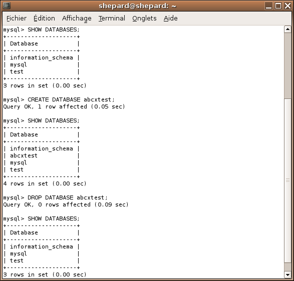
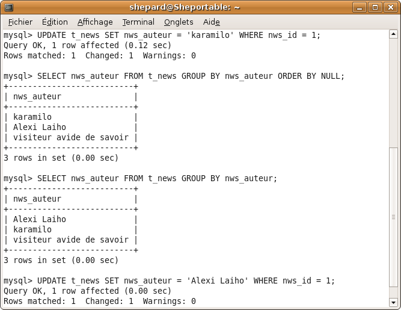
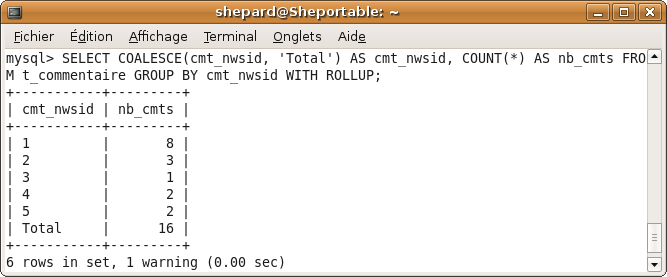

C'est quoi tous ces trucs que je vois sur les forums et auxquels je ne comprends rien à rien ?? J'en ai marre de passer pour un idiot, que quelqu'un m'expliiiique !!
Tiens ben ça tombe bien : c'est justement pour ça que ce tutorial est conçu :p . Comme pour tous les cours de ce site, on part de Zér0, ici je considérerai que Zér0, c'est le cours à M@teo... Donc avant de vous lancer, allez au moins relire ceci si votre cerveau vous paraît embrouillé sur certains points ;) .
Je vous conseille également fortement de lire les chapitres dans l'ordre, la plupart s'appuient sur des concepts vus précédemment. Mais si vous êtes attentif et que vous vous appliquez, vous vous demanderez bientôt pourquoi tous les Zér0s n'utilisent pas les techniques citées ici :D .
Avant de commencer : utilisation de la console MySQL
Dans ce chapitre, vous allez apprendre à vous servir du client en ligne de commande de MySQL, c'est pour moi le moyen le plus simple et le plus rapide d'effectuer des tests avec MySQL.
Notez que quand je dis "lancer le client", celà n'est possible qu'en local sur votre machine. En effet pas question de lancer ce client sur une machine distante telle que celle de votre hébergeur, à moins que vous n'y ayez un accès sécurisé (SSH)
Sous Windows - WampServer
Lancer le client sous Windows avec WampServer, il n'y a rien de plus simple : dans la dernière version, soit WAMP5 1.6.0, il suffit de cliquer sur l'icône du systray (en supposant bien sur que WAMP5 est lancé), puis de cliquer sur MySQL console du menu MySQL. Entrez ensuite votre mot de passe (par défaut, appuyez simplement sur ENTRÉE). Voici ce que vous devriez obtenir (sous WAMP5 1.6.0) :
Sous Windows - Autres
Si vous n'utilisez pas Wamp, ou que vous n'aimez pas son menu ( :p ), il y a une autre solution : lancer le client avec la ligne de commande de Windows.
Pour commencer, il faut repérer le fichier mysql du dossier d'installation de mysql. Ca pourrait être : "C:\Program Files\EsayPHP1-8\mysql\bin\mysql.exe".
Appuyez simultanément sur la touche "Windows" du clavier (entre "ctrl" et "alt" en bas à gauche) et sur R pour lancer l'exécuteur Windows. Tapez ensuite "cmd" puis ENTER.
Ensuite, il faut commencer par aller dans le répertoire où se trouve mysql.exe grâce à la commande "cd". Enfin, pour lancer le client, il faut faire "mysql.exe --user=root --password=mot_de_passe. Ce qui donne :
cd "C:\Program Files\EasyPHP1-8\mysql\bin"
mysql.exe --user=root
Généralement, vous pouvez remplacer utilisateur par root et omettre la clause --password.
En images : (remarquez que j'exécute directement la commande dans l'exécuteur de Windows, si vous n'y arrivez pas de cette façon, reprenez la méthode du dessus).
Sous Unix ( Linux, BSD,...)
Sous Unix, lancez une console et tapez mysql -u root (Et ça fait une belle claque pour tous ceux qui disent que Windows est plus simple que Linux ^^).
A noter que si la console vous répond quelque chose du genre ERROR 1045 (28000): Access denied for user 'root'@'localhost' (using password: NO), ajouter l'option -p pourra vous permettre d'indiquer un mot de passe :)
On va maintenant voir si tout marche bien sur notre installation de MySQL.
Test 1 : test des fonctionnalités
Lancez cette commande :
SELECT 'essai' AS test;
Vous devriez voir ceci (ou quelque chose qui y ressemble en tout cas, dans le cas contraire, bah postez un message sur le forum :p ) :
Test 2 : test des droits
Normalement, vous devriez être logué en tant que root : sous Windows, c'est fait automatiquement la plupart du temps, et je vous ai expliqué sous linux comment vous loguer en tant que tel.
Nous allons, histoire d'être sûrs, tester que nous avons bien les droits create et drop, logiquement, si vous avez ces deux là, vous devriez tous les avoir.
Lancez donc ces deux commandes l'une après l'autre et regardez si vous obtenez à peu près le même résultat que moi :
SHOW DATABASES;
CREATE DATABASE abcxtest;
SHOW DATABASES;
DROP DATABASE abcxtest;
SHOW DATABASES;

Si vous avez le même que moi, c'est bon ! Sinon vous n'êtes probablement pas connecté en tant que root, auquel cas je vous conseille, sous linux, de relire la sous-partie précédente, et sous Windows, de vérifier vos paramètres de connexion, et, pourquoi pas, d'ajouter -u root à votre ligne de commande (-u root -p si vous avez configuré un mot de passe pour root).
Bon, c'est bien beau tout ça : ça fonctionne, ça va vite, ça fait pro, c'est beau,...
Oui mais pourquoi quand je fais ça : SELECT 'bonjour', ça m'affiche deux fois "bonjour" dans un tableau ?
En fait, la première ligne du tableau comporte les noms des différentes colonnes, tandis que les lignes suivantes comportent les données. Reprenons l'exemple précédent :
On voit bien, dans le résultat de la dernière requête par exemple, que "Database" est le nom de la colonne, et que "information_schema", "mysql" et "test" sont les données contenues dans cette colonne (en l'occurence les noms des différentes bases de données présentes sur le serveur).
Comme vous avez pu le constater, la console MySQL est très pratique pour effectuer quelques tests avant de mettre la requête dans PHP. De plus elle répond trés rapidement par rapport au chargement d'une page PHP.
Un premier chapitre peut-être pas des plus attractifs mais nécessaire pour la suite.
Vous vous demandez plus que certainement à quoi peut bien servir une requête appelant des données ne provenant pas d'une table. Je vous le dis tout de suite, pas à énormément de choses, mais dans certains cas, ça peut être très pratique.
Nous verrons plusieurs cas : simplement sélectionner une valeur, sélectionner une valeur ayant subi des "transformations", les variables utilisateur et enfin les fonctions utilisateur (qui n'existent qu'à partir de MySQL 5).
Vous vous demandez peut-être pourquoi je vous montre ça, et bien juste parce que beaucoup d'entre vous ne savez pas que la clause FROM n'est pas obligatoire dans une requête SELECT ! Vous vous en doutez certainement vu le titre de ce chapitre : la plupart des requêtes qui suivent seront basées sur le même modèle... :p
Utilisation des apostrophes
A propos, faisons une petite mise au point à propos de l'utilisation des apostrophes autour des valeurs ...
Pour les valeurs numériques, les apostrophes ne sont pas obligatoires :
SELECT 5;
Pour les valeurs littérales, les apostrophes sont obligatoires :
SELECT 'bonjour';
Pour les valeurs horodataires, les apostrophes sont obligatoires :
SELECT '01:13:54';
Les valeurs TRUE, FALSE et NULL ( on en reparlera plus tard ) s'écrivent sans apostrophe :
SELECT NULL;
Pour écrire une apostrophe, il suffit de la doubler :
SELECT 'On m''appelle Shepard';
Il est fortement recommandé de toujours terminer ses requêtes par un point-virgule. Pourquoi ? Parce que quand on en arrivera au chapitre sur les transactions, si vous n'avez pas encore pris cette habitude, vous risquez d'être confrontés à quelques ennuis. Retenez simplement ceci : toute requête SQL doit se terminer par un point-virgule.
Le renommage de colonnes avec AS
Bien sûr, on peut sélectionner plusieurs valeurs en les séparant par des virgules :
SELECT 'bonjour', 1, '01:25:18';
Qui renvoie :
Vous remarquez que les noms de colonnes ne sont pas vraiment... pratiques. C'est pour ça qu'existe le renommage de colonnes. Exemple :
SELECT 'bonjour' AS exemple_texte, 1 AS exemple_nombre, '01:25:18' AS exemple_heure;
Résultat :
On peut aussi mettre des noms plus exotiques grâce aux accents :
SELECT 'bonjour' AS `Du texte`, 1 AS `Un chiffre`, '01:25:18' AS `De l'horodatage`;
Remarquez les espaces et l'apostrophe dans le nom. Il est toutefois vivement contre-indiqué d'utiliser des noms pareils car le traitement PHP s'en trouvera fortement pénalisé.
Les opérateurs mathématiques
Il existe 7 opérateurs principaux sous MySQL:
L'addition: "+"
La soustraction: "-"
La multiplication: "*"
La division: "/"
La division entière "DIV"
Le reste d'une division ( Modulo ): "%" ou "MOD"
La puissance: "^"
La division entière retourne toujours un nombre arrondi à l'unité inférieure ! Ne vous étonnez pas si vos calculs sont incorrects si vous utilisez à un moment ou à un autre des nombres décimaux et que vous utilisez DIV plutôt que /.
Toutefois, il est préférable, pour des raisons d'optimisation, d'utiliser 5 DIV 4 que ROUND( 5 / 4 ). (Vous apprendrez l'utilisation de ROUND dans quelques minutes).
C'est peut-être assez con à dire, mais M@teo ne dit à aucun moment qu'il existe des fonctions aussi dans MySQL. Le seul soupçon que vous pourriez avoir par rapport à leur existence était le moment où vous avez appris à compter le nombre de lignes avec COUNT(col).
Il existe une floppée de fonctions MySQL telles que COUNT, certaines agissant sur des chaînes de caractères, d'autres sur des nombres, d'autres sur des dates, certaines sur les colonnes d'une table,...
Comme nous ne travaillons pas sur des tables, nous nous passerons pour le moment de la dernière catégorie, je vous apprendrai dans cette sous-partie les fonctions principales ainsi que leur utilité. Bonne lecture !
UPPER / LOWER
Exemple
SELECT UPPER('C''est un assassinat !!') AS majs, LOWER('NON ?') AS mins;
Effets
UPPER met une chaîne en majuscules et LOWER met une chaîne en minuscules. Seuls les caractères alphabétiques sont pris en compte.
Utilisation
Plusieurs utilisations, dont certaines sont contre-indiquées :
On utilise souvent UPPER() ou LOWER() pour comparer deux chaînes quand on ne veut pas faire attention à la casse (c'est à dire ne pas tenir compte des minuscules / majuscules). Mais il est préférable d'utiliser un autre charset se terminant par _ci (case insensitive). La plupart du temps c'est déjà le cas et vous ne devez même pas vous en préoccuper.
UPPER et LOWER sont aussi parfois utilisés pour uniformiser des chaînes de caractères (par exemple NOM Prénom). L'exemple le plus courant étant de mettre un nom en majuscules et un prénom en minuscules sauf la première lettre en majuscule.
CHAR_LENGTH
Exemple
SELECT CHAR_LENGTH('Bonjour tout le monde !!');
SELECT CHAR_LENGTH('Il l''a');
Effets
CHAR_LENGTH renvoie le nombre de caractères contenus dans une chaîne.
Utilisation
CHAR_LENGTH peut être utilisé comme une vérification (vérifier qu'un pseudo ne contient pas plus de n caractères, etc). Vous allez me dire qu'on peut faire ça du côté PHP, mais moi je trouve ça plus facile du côté SQL, on va dire : "Chacun ses goûts" ;) .
La norme SQL prévoit deux moyens pour concaténer : CONCATENATE et l'opérateur || (l'opérateur étant plus largement utilisé). Par exemple, sous PostGreSQL :
MySQL ne suit pas la norme et crée une autre fonction : CONCAT.
L'opérateur || n'existe tout simplement pas en MySQL, enfin si il existe, mais il ne sert pas du tout à concaténer :p .
Utilisation
Imaginez que vous avez créé un forum où on peut entrer son nom et son prénom. Vous avez stocké ces données dans deux champs distincts. Dans un tableau HTML, vous n'allez tout de même pas écrire le nom et le prénom dans deux colonnes différentes :p . Donc vous utilisez CONCAT.
CONCAT_WS est moins connu mais parfois très utile ! Il permet de concaténer des chaînes mais d'insérer entre chaque chaîne des caractères. On en reparlera dans le chapitre sur les variables utilisateur :) .
LEFT / RIGHT / SUBSTRING
Exemple
SELECT LEFT('bonjour', 3) AS gauche3, RIGHT('bonjour', 1) AS droite1, SUBSTRING('Bonjour' FROM 2 FOR 3) AS souschaine23;
Effets
LEFT('chaine', n) prend n caractères de 'chaine' en partant de la gauche. RIGHT('chaine', n) prend n caractères de 'chaine' en partant de la droite. SUBSTRING('chaine' FROM m FOR n) prend n caractères de 'chaine' en partant du caractère m.
Utilisations
Vous vous souvenez de ce qu'on a dit avec UPPER et LOWER à propos du formatage de nom / prénom ? Eh bien maintenant vous savez le faire :p :) .
Essayez de trouver la requête vous-même, puis regardez la solution ;) . Note : les données sont dans deux champs différents, rassemblez-les en un seul histoire d'augmenter un (tout petit) peu la difficulté :diable: . Résultat à obtenir : NOM Prénom à partir de Nom prenoM :) .
SELECT CONCAT(UPPER('nom'), ' ', UPPER(LEFT('prenoM', 1)), LOWER(SUBSTRING('prenoM' FROM 2)));
Quelques fonctions mathématiques...
Les fonctions mathématiques s'utilisent pour faire des mathématiques, qui sont des outils universels et utilisables presque partout. Inutile de vous faire une liste de toutes les possibilités qu'elles offrent. Voici un tableau assez éloquent selon moi :
Fonction
Description
Résultat
CEIL(2.318)
Arrondit à l'entier supérieur
3
FLOOR(1.942)
Arrondit à l'entier inférieur
1
ROUND(1.452, 2)
Arrondit 1.452 à 2 décimales. On peut arrondir un nombre négatif.
1.45
SIN(0), COS(0), TAN(0), COT(0)
Donne les sinus, cosinus, tangente et cotangente de 0 (angle exprimé en radians).
0, 1, 0, NULL
ASIN(0), ACOS(0), ATAN(0)
Donne les arcsinus,... de 0 (l'intervalle va de -1 à 1 pour ASIN et ACOS).
0, 1.5707963267949, 0
PI()
Donne la valeur de Pi.
3.141593
DEGREES(1)
Convertit 1 radian en degrés
57.295779513082
RADIANS(60)
Convertit 60 degrés en radians
1.0471975511966
RAND()
Renvoie un nombre aléatoire entre 0 et 1
0.54017342584224
SQRT(4)
Renvoie la racine carrée de 4
2
NOW() / CURRENT_TIME() / CURRENT DATE()
Exemple
SELECT NOW(), CURRENT_DATE(), CURRENT_TIME();
Effets
NOW() renvoie le timestamp (pas le timestamp UNIX) actuel, CURRENT_TIME() renvoie l'heure et CURRENT_DATE() la date.
Utilisations
Ces valeurs sont très utiles dans les valeurs par défaut de certains champs dans certaines tables. Par exemple, si vous faites un script de news et que vous stockez la date à laquelle a été postée la news, mettre NOW() comme valeur par défaut du champ concerné est une technique fortement conseillée :) .
FROM_UNIXTIME() vous permet de passer d'un timestamp UNIX (par exemple obtenu par PHP) à un timestamp SQL (mieux adapté aux bases de données). Il est déconseillé de stocker des timestamps UNIX dans une BDD, c'est pourquoi ces fonctions existent pour permettre une conversion simple et efficace.
UNIX_TIMESTAMP() vous permet de revenir à un format UNIX ou d'obtenir le timestamp UNIX actuel si aucune date n'est spécifiée en argument. Normalement, cette fonction ne devrait jamais être utilisée : PHP ne devrait plus avoir à traiter des variables de type DATETIME après une requête SQL ; il vaut mieux traiter les dates dans la requête SQL via DATE_FORMAT(), GET_FORMAT() et EXTRACT() (voir juste en dessous).
Utilisation
Ces fonctions servent à stocker une date provenant de PHP dans une BDD au format date SQL. Elles permettent également de revenir à un timestamp UNIX, mais comme ça a déjà été dit, il vaut mieux ne plus traiter de dates du côté de PHP.
DATE_FORMAT() / GET_FORMAT() / EXTRACT()
Exemple
SELECT DATE_FORMAT(CURRENT_DATE(), GET_FORMAT(DATE, 'EUR')) AS today,
DATE_FORMAT(NOW(), '%d.%m.%Y') AS today2,
CONCAT_WS('.', EXTRACT(DAY FROM NOW()), EXTRACT(MONTH FROM NOW()), EXTRACT(YEAR FROM NOW())) AS today3;
Effets
DATE_FORMAT() permet de formater une date selon divers formats fournis soit par vous-même (le truc bizarre avec les signes %), soit par GET_FORMAT(). Toutes les options disponibles pour ces deux options peuvent être trouvées sur cette page (je vais pas copier la doc non plus ^^ :p ) :
Ces fonctions sont utilisées pour rendre des dates au format français, c'est très pratique et ça permet de ne pas devoir intervenir du côté PHP. A préférer aux fonctions UNIX (et donc au traitement du côté PHP).
Et voilà, bien sûr, il existe beaucoup plus de fonctions dans MySQL, mais je crois vous avoir donné les principales, et en tout cas les plus utiles ;) :) .
Saviez-vous que, en plus des fonctions préexistantes fournies par MySQL, vous pouviez créer vos propres fonctions à partir de MySQL 5 ?
Dans cette partie, je ne vais pas vous expliquer comment créer vos propres fonctions, on n'a pas encore le niveau, mais je voulais juste vous dire que ça existait, et vous donner un petit exemple :p :) .
Les fonctions utilisateur ont des utilités multiples, de plus, elles peuvent retourner des valeurs qui pourraient être utilisées directement dans une requête. Une seule contrainte : l'appel de la fonction, admettons que vous ayez créé une fonction nommée 'f_format_nom_prenom' qui prend deux arguments (nom et prenom), vous ne pourriez lancer une requête de ce style (ça ne marcherait pas) :
f_format_nom_prenom('pijcke', 'fabiaN');
Le SELECT est obligatoire ! Voici ce qu'il aurait fallu faire :
SELECT f_format_nom_prenom('pijcke', 'fabiaN');
Encore une fois, la clause FROM est absente, pourtant dans la fonction, il peut très bien y avoir des SELECT sur des tables, mais on n'en a pas besoin dans la requête qui appelle la fonction :) .
Juste pour vous montrer à quoi ça ressemble, voici comment on aurait pu coder la fonction f_format_nom_prenom :
CREATE FUNCTION
f_format_nom_prenom ( nom VARCHAR(25), prenom VARCHAR(25) )
RETURNS VARCHAR(50) LANGUAGE SQL READS SQL DATA
RETURN CONCAT(UPPER(nom), ' ', UPPER(LEFT(prenom, 1)), LOWER(SUBSTRING(prenom FROM 2)));
Bien sûr, une fonction peut contenir beaucoup plus de lignes, on ajoute alors les mots-clefs BEGIN et END, mais on verra tout ça plus tard...
Voici comment on utilise cette fonction :
SELECT f_format_nom_prenom('pijcke', 'fabian') AS shepard;
Pas si mal pour 4 petites lignes de code ^^ :p .
C'était pas trop dur ? :p
Bon comme je vous l'avais dit, ce chapitre est doté d'un pouvoir assez... soporifique, j'espère au moins que vous avez eu 20 / 20 au Q.C.M. ! :ange:
Voici un chapitre qui devrait en intéresser plus d'un !
Ce chapitre vous permettra de faire plein de trucs géniaux, de plus, très peu savent ce que sont les variables utilisateur, donc profitez en : même M@teo ne savait pas ce que c'était avant de lire ce tuto :D :p (pour ceux qui voudraient savoir comment moi je l'ai appris, dites-vous simplement que je me suis farci toute la doc ^^ ).
En fait il s'agit simplement de variables, exactement comme dans PHP, à quelques différences près :
Une variable commence par @ et est composée de caractères alphanumériques et de tirets bas "_" (on peut également utiliser $ et . mais je vous déconseille d'utiliser ces deux signes car ils créent des confusions).
Les variables ne doivent pas être déclarées : elles valent NULL par défaut.
Les variables peuvent être définies grâce à SET ou à l'aide de l'opérateur :=
Une variable peut contenir un entier, un réel ou une chaîne de caractères.
Toute variable est automatiquement fermée à la fin d'une session.
Il y a plusieurs façons de définir une variable, il n'y en a pas une "meilleure" que l'autre, on utilise l'une dans certains cas, et l'autre dans d'autres.
Déclarer une variable avec SET
SET permet de déclarer une variable. Par exemple :
SET @une_variable = 1;
On peut également utiliser une requête comme valeur de cette variable (en fait ce qu'on va faire s'appelle une sous-requête, mais on apprendra ça un peu plus tard :) ).
Ne vous préoccupez pas trop de ce code, essayez juste de le comprendre, nous apprendrons plus tard la signification de chacunes de ces lignes.
CREATE DATABASE tests;
USE tests;
CREATE TABLE test ( a int );
INSERT INTO test VALUES (1), (2), (3), (4), (6), (9), (19), (34), (72);
SET @a := ( SELECT COUNT(*) FROM test ); -- Définition d'une variable grâce à une sous-requête
Sélectionner une variable avec SELECT
Pour sélectionner une variable, rien de plus simple, il suffit de faire :
SELECT @mavariable;
Nous venons de définir deux variables : @une_variable et @a, regardons maintenant ce qu'elles contiennent ...
SELECT @une_variable, @a;
Mais que vaut une variable non définie, par exemple @aetuo (pour ceux qui se demandent d'où ça vient, c'est azertyuiop en tirant une lettre sur deux :D ) :
SELECT @aetuo;
Comme vous le voyez, ça ne renvoie pas d'erreur, ça ne renvoie tout simplement... rien. o_O
En fait une valeur est bien renvoyée : la valeur NULL, cette valeur est l'objet du prochain chapitre, donc je ne détaillerai pas plus ce phénomène ici. ;)
(re)Définir une variable avec SELECT
On peut également donner une valeur à une variable grâce à SELECT (ou UPDATE ou INSERT ou DELETE mais nous ne parlerons que de SELECT, sachez juste que c'est possible).
On définit une variable grâce à l'opérateur := (comme en Delphi pour ceux qui connaissent). La plupart du temps, les variables sont définies la première fois avec SET puis manipulées avec SELECT, mais il n'est pas rare que des exceptions enfreignent cette règle.
Définissons @a à 4:
SELECT @a := 4;
Comme vous le voyez, SELECT renvoie directement la valeur vu que @a := 4 est considéré comme une colonne. On aurait très bien pu rajouter un AS pour redéfinir le nom de cette colonne.
Tiens à votre avis, est-il possible de donner à une colonne un nom contenu dans une variable ? Faisons le test :
SET @nom = "colonne";
SELECT 4 AS @nom;
Comme vous le voyez, ça ne fonctionne malheureusement pas. C'est dommage, car ça aurait ouvert des voies pour la linéarisation de données (lignes en colonnes ou colonnes en lignes). Si toutefois quelqu'un trouve une astuce pour contourner ce problème, je lui serais fortement reconnaissant de me dire comment faire.
Enormément de choses sont possibles grâce aux variables utilisateur ! Cependant la plupart des applications possibles demandent plus de connaissances que ce que vous êtes censé savoir. Il y a cependant une chose que vous devriez être capable de faire en cherchant un peu : un système de classement !
Le but ? Je vous donne une table avec des pseudos associés à des points, vous devez réussir à donner une place à chacun de ces pseudos en fonction de son nombre de points. Chaque pseudo a un nombre de points différents (pas d'égalité donc), en effet la gestion des ex-aequos rendrait l'exercice bien trop difficile pour votre niveau actuel. :p
Quelques indices supplémentaires :
Pensez à ORDER BY que vous avez appris à utiliser dans le cours de M@teo.
SET et l'opérateur := vous seront normalement nécessaires.
Il ne me reste plus qu'à vous souhaiter bonne chance !
Une solution
En SQL, il n'y a jamais qu'un seul moyen de faire, ce qu'il y a dans la case secrète représente donc une solution, peut-être que la vôtre est radicalement différente (ça m'étonnerait un peu quand même mais bon :p ), mais ce qui compte à ce niveau, c'est que ça fonctionne ! Le principal c'est d'avoir cherché et d'être tombé sur quelque chose de potable, si vous n'y êtes pas arrivé, ne vous inquiétez pas : c'était le premier et il y en aura sans doute d'autres. ;) :)
Bon, assez blablaté. ^^
SET @place = 0;
SELECT @place := @place + 1 AS place, pseudo, points FROM joueurs ORDER BY points DESC;
Comme vous le voyez, les requêtes ne sont pas longues du tout (ce n'est pas pour rien que je disais que c'était de votre niveau :-° ), néanmoins il fallait y penser ! Je félicite ceux qui ont trouvé, mine de rien ce n'était pas si facile !
J'ai hésité à ajouter cette sous-partie à ce chapitre. En effet, elle fait appel à des notions dont vous n'avez certainement jamais entendu parler, je l'ai ajoutée quand même, dites-vous qu'il ne s'agit que d'un exemple, si vous ne comprenez pas tout à fait, ne vous inquiétez pas, on reviendra plus tard dans le cours sur tout ce qui sera montré ici. ;)
Le problème
On a une table nommée livreor (id, auteur, message) qui contient des messages contenus dans un livre d'or, on aimerait sélectionner un message au hasard. Chaque message a un identifiant unique.
On peut distinguer deux cas à ce stade :
Les identifiants sont continus (1, 2, 3, 4,...). Dans ce cas il est très facile de résoudre notre problème, mais en fait il est très rare que les identifiants soient continus. La plupart du temps, des messages ont été supprimés par un administrateur (messages de test lors du développement du site, messages malvenus, etc).
On voit donc apparaître le deuxième cas : les identifiants ne sont pas continus (2, 3, 6, 8,...) dans ce cas le problème devient plus compliqué à résoudre, et c'est là que les variables de MySQL entreront en jeu. :)
Cas 1 : les identifiants sont continus
CREATE TABLE livreor ( id INT AUTO_INCREMENT, auteur VARCHAR(30), message TEXT, PRIMARY KEY(id) );
INSERT INTO livreor ( auteur, message )
VALUES
( 'Shepard', 'Tres bon site :p' ),
( 'Alexi', 'Vive Children of Bodom !' ),
( 'Shepard', 'Entierement d''acord, Alexi :)' ),
( 'Janne', 'Vive le synthe :-°' ),
( 'Alexi','N''importe quoi ! C''est la guitare qui est mieux :D' );
Rien que dans ce cas-là, les variables MySQL sont déjà très utiles, je vous conseille de bien comprendre ce cas-ci car sinon vous risquez de vraiment avoir du mal pour le second... :p
En fait, il suffit de trouver un nombre au hasard pris entre 1 et n, n étant le nombre de messages.
On peut récupérer très facilement n grâce à la requête suivante :
SELECT COUNT(*) FROM livreor;
Ensuite on va utiliser la fonction RAND() pour prendre un nombre au hasard entre 0 et n - 0.000(...)01 :
SELECT RAND() * COUNT(*) FROM livreor;
Utilisons maintenant la fonction FLOOR pour arrondir à l'entier inférieur. On aura alors un nombre entre 0 et n - 1. Il faudra donc ajouter un au résultat pour avoir un nombre entre 1 et n :
SELECT FLOOR( RAND() * COUNT(*) ) + 1 FROM livreor;
Il suffit maintenant de prendre le message ayant pour identifiant le résultat de cette requête :
SELECT auteur, message FROM livreor WHERE id = FLOOR( RAND() * ( SELECT COUNT(*) FROM livreor ) ) + 1;
Oui mais non ! Il y a un petit problème... RAND() est réévalué à chaque ligne, ce qui fait qu'avec cette requête, on peut avoir des bizarreries de ce genre là :
Comme vous le voyez, ça ne marche pas toujours, des fois on a 3 lignes, et des fois on n'en a pas du tout !
Pour y remédier, il suffit de stocker RAND() quelque part... Où ça ? Dans une variable pardi ! Sauf qu'au lieu de juste stocker le RAND(), on va y mettre tout le FLOOR(...) + 1. Ainsi on aura un nombre entier (plus rapide à stocker) et la requête sera simplifiée :
SET @id_hasard = FLOOR( RAND() * ( SELECT COUNT(*) FROM livreor ) ) + 1;
SELECT auteur, message FROM livreor WHERE id = @id_hasard;
Bien sûr, il faut réexécuter le SET avant chaque SELECT, sinon @id_hasard garde la même valeur et on obtient toujours le même message.
Et le tour est joué ! (J'espère que jusque là vous avez suivi parce que les choses vont se compliquer à partir de maintenant :p ).
Cas 2 : les identifiants sont discontinus
DROP TABLE livreor;
CREATE TABLE livreor ( id INT AUTO_INCREMENT, auteur VARCHAR(30), message TEXT, PRIMARY KEY(id) );
INSERT INTO livreor ( id, auteur, message )
VALUES
( 2, 'Shepard', 'Tres bon site :p' ),
( 3, 'Alexi', 'Vive Children of Bodom !' ),
( 6, 'Shepard', 'Entierement d''acord, Alexi :)' ),
( 9, 'Janne', 'Vive le synthe :-°' ),
( 12, 'Alexi','N''importe quoi ! C''est la guitare qui est mieux :D' );
Là ça se complique un peu : si on prend un nombre au hasard entre 1 et le nombre de lignes, toutes les dernières lignes ne seront pas prises en compte et les "trous" pourraient être sélectionnés, donc ça ne va vraiment pas.
Une autre solution serait de prendre un nombre au hasard entre 1 et le dernier id de la table, puis de prendre l'id en dessous de ce nombre qui se rapproche le plus de ce nombre, mais je n'aime pas cette technique, tout d'abord parce que s'il y a des "gros" trous (suppression de 2000 messages d'affilée par exemple), le message juste avant ce trou reviendra plus souvent que les autres, et ensuite parce que cette méthode est plus compliquée que celle que je vais vous montrer. :p
Il y a une astuce : créer une table temporaire (donc qui ne dure que le temps de la session) avec une colonne contenant des chiffres continus (donc on retombe dans le premier cas), plus une autre colonne contenant les "vrais" id.
Pour créer cette table, rien de plus simple : on se base sur le principe du classement, sauf qu'il n'est plus nécessaire de préciser le ORDER BY :
SET @place = 0;
CREATE TEMPORARY TABLE temp_livreor AS SELECT @place := @place + 1 AS place, id FROM livreor;
Histoire de nous assurer que tout fonctionne bien ...
SELECT * FROM temp_livreor;
Remarquez qu'en général, je n'utilise jamais l'étoile qui permet de sélectionner tous les champs d'un coup, si je le fait ici, c'est parce que je veux m'assurer qu'il n'y ait rien en trop. :)
A partir de maintenant c'est facile : il suffit d'utiliser la même technique que tout à l'heure pour choisir une entrée de la table temp_livreor, puis de prendre le "vrai" id qui lui correspond, et d'afficher les infos correspondant à cet id. :)
Par exemple :
SET @place_hasard = ( SELECT FLOOR( RAND() * ( SELECT COUNT(*) FROM temp_livreor ) ) + 1 );
SET @id_hasard = ( SELECT id FROM temp_livreor WHERE place = @place_hasard );
SELECT auteur, message FROM livreor WHERE id = @id_hasard;
Ou encore :
SET @place_hasard = ( SELECT FLOOR( RAND() * ( SELECT COUNT(*) FROM temp_livreor ) ) + 1 );
SELECT auteur, message FROM livreor WHERE id = ( SELECT id FROM temp_livreor WHERE place = @place_hasard );
Il est également possible de le faire avec une jointure :
SET @place_hasard = ( SELECT FLOOR( RAND() * ( SELECT COUNT(*) FROM temp_livreor ) ) + 1 );
SELECT auteur, message FROM livreor NATURAL JOIN temp_livreor WHERE place = @place_hasard;
La meilleure solution est la dernière, mais les deux autres sont évidemment tout à fait valables :) (ne vous inquiétez pas si vous ne comprenez pas les deux dernières requêtes : c'est normal ^^ ).
Les trois techniques fonctionnent et renvoient le même message si on ne modifie pas @place_hasard (évidemment). Voici ce que ça donne dans la console :
Voilà, j'admet que cette sous-partie était ardue et impossible à comprendre en entier si vous n'aviez lu que le cours de M@teo. Je ne peux que vous conseiller de venir le relire une fois que vous saurez ce que sont les jointures, les sous-requêtes et les tables temporaires. ;) :)
Alors ? C'était sympa comme matière non ?
Bien qu'on n'ait vu que quelques utilisations de ces variables, il faut bien vous rendre compte que les possibilités sont énormes ! MySQL est l'un des seuls SGBDR à inclure ce type de fonctionnalité, donc faites attention si vous comptez changer de moteur par la suite : vos requêtes ne seront pas compatibles !
Pour moi, les variables utilisateur sont l'une des choses qu'il manque à la norme SQL, bien sûr il faudrait les améliorer un peu (pouvoir renommer une colonne selon la valeur d'une variable par exemple :p ), mais ce serait sans aucun doute une forte avancée pour le monde de SQL. Je trouve dommage qu'elles soient si peu utilisées, leur potentiel est sous-estimé, j'espère que bientôt, les développeurs se rendront compte des fonctionnalités qu'elles permettent !
Voici un autre chapitre intéressant : le traitement des valeurs nulles, autrement dit le traitement d'une absence de valeurs !
Encore une fois, peu de développeurs se servent de cette fonctionnalité ! Pourtant les valeurs nulles sont pratiquement indispensables dans une base de données. L'exemple le plus flagrant est un profil dans un espace membre : la plupart des codeurs mettent une chaîne vide ( '' ) pour indiquer qu'il n'y a pas de valeur, alors qu'il serait plus simple de mettre un simple NULL, qui peut être traité beaucoup plus facilement par la suite dans les requêtes SELECT grâce aux fonctions que nous verrons dans ce chapitre. :)
La valeur NULL n'est pas une valeur comme les autres. En général, on la considère comme une valeur à problèmes, mais en fait elle est très pratique à partir du moment où on sait l'utiliser.
Les valeurs NULL, comme je vous le disais, sont spéciales. Par exemple, on ne peut pas les comparer. Pour comprendre ce principe, créons une table exemple :
CREATE TABLE ex_null ( id INT AUTO_INCREMENT, points INT DEFAULT NULL, PRIMARY KEY ( id ) );
INSERT INTO ex_null ( points ) VALUES ( 135 ), ( 3484 ), ( DEFAULT ), ( DEFAULT ), ( 0 ), ( DEFAULT );
Dans cette table, les NULL représentent ceux qui n'ont jamais gagné ni perdu de points. Les 0 représentent ceux qui ont déjà gagné des points, mais les ont reperdus.
Un autre façon de faire cette table aurait été d'ajouter une colonne "a_deja_joue", mais elle est totalement inutile dans le sens où un NULL nous permet d'avoir cette information plus facilement sans colonne supplémentaire.
Essayons de récupérer les lignes de ceux qui n'ont jamais joué:
SELECT id, points FROM ex_null WHERE points = NULL;
Euh... o_O MySQL est devenu bigleu ?? :waw:
Non, c'est juste que les NULL ne peuvent pas être comparés à l'aide du signe "=". Et encore, MySQL est gentil : tout autre SGBDR aurait renvoyé une erreur (ou le devrait, tout comme MySQL).
Pour savoir si une valeur est nulle, il faut utiliser l'opérateur IS NULL :
SELECT id, points FROM ex_null WHERE points IS NULL;
Fonction très pratique : COALESCE prend une liste d'arguments aussi longue que l'on veut (pas trop quand même :p ), et renvoie la première valeur non nulle passée en argument :
SELECT COALESCE(NULL, 0);
Renvoie 0.
Donc dans notre table d'essai, pour renvoyer 0 au lieu de NULL, on pourrait faire comme ça :
SELECT id, COALESCE(points, 0) FROM ex_null;
Un exemple de la praticité de la fonction COALESCE :
SELECT id, COALESCE(points, 'N''a jamais joue') AS points FROM ex_null;
Essayez donc d'obtenir un tel résultat si facilement avec une colonne "a_deja_joue" supplémentaire. ;) :)
IFNULL
IFNULL est une fonction assez... spéciale et plutôt compliquée à comprendre au début, mais rassurez-vous : on s'y fait tous. :p :)
IFNULL prend deux paramètres.
Si le premier paramètre est NULL, alors le deuxième paramètre est renvoyé. Si le premier paramètre n'est pas NULL, alors c'est lui-même qui est renvoyé.
Compris ? :p
Relisez ça une paire de fois, et passez à la suite une fois que vous serez sûr d'avoir compris. :)
On va simuler une colonne a_deja_joue qui vaudra 0 si les points sont égaux à NULL, sinon 1.
Pour cela, on va commencer par utiliser IFNULL(points, 0)
SELECT id, IFNULL(points, 0) AS a_deja_joue FROM ex_null;
Ainsi, si points est NULL, on aura 0, sinon on aura [points].
Pour le 0, c'est bon, mais nous, on veut 1, on ne veut pas points, car si points vaut 0 (comme l'enregistrement ayant pour id 5), notre système ne fonctionnera pas. On va donc diviser le résultat du IFNULL par COALESCE(points, 1). Ainsi on aura soit 1 (points <> 0 => points/points = 1), soit 0 (points = NULL => 0 / 1 = 0), soit NULL (points = 0 => 0 / 0 = NULL en SQL).
SELECT id, IFNULL(points, 0) / COALESCE(points, 1) AS a_deja_joue FROM ex_null;
Ici, on peut améliorer un truc : comme vous le voyez, on obtient 1.0000 et 0.0000, pas super joli, pour obtenir 1 et 0 il suffit d'utiliser l'opérateur DIV vu au second chapitre. :)
SELECT id, IFNULL(points, 0) DIV COALESCE(points, 1) AS a_deja_joue FROM ex_null;
Il reste un tout petit problème : les NULL (points = 0) doivent être transformés en 1. Pour cela, évidemment, rien de plus simple, il suffit d'utiliser, une fois de plus, la fonction COALESCE qui englobera cette fois toute la division :
SELECT id, points, COALESCE(IFNULL(points, 0) DIV COALESCE(points, 1), 1) AS a_deja_joue FROM ex_null;
Assez sympa non ? Bon j'admets que ce n'était peut-être pas super super simple à comprendre, mais en y allant étape par étape, ça a du bien se passer, enfin j'espère. :)
Vous vous souvenez du système de classement vu dans le chapitre précédent ? (j'espère que oui sinon mon enseignement ne serait pas d'une grande utilité :D ). Voici les requêtes que je vous avais données :
SET @place = 0;
SELECT @place := @place + 1 AS place, pseudo, points FROM joueurs ORDER BY points DESC;
Et bien grâce aux fonctions que nous venons de voir, nous pouvons maintenant tout rassembler sur une seule ligne !
En fait, ça ne sert à strictement rien et ça ralentit un peu la requête, mais c'est toujours intéressant de le savoir car peut-être que vous serez confrontés à des cas où vous serez obligés d'utiliser la technique suivante :
SELECT @place := COALESCE(@place, @place := 0) + 1 AS place, pseudo, points FROM joueurs ORDER BY points DESC;
Pratique non ? On peut également vérifier facilement si une variable a déjà été déclarée grâce à la fonction IFNULL. Comme vous le constatez, les fonctions de traitement des valeurs NULL sont relativement pratiques couplées aux variables utilisateur. Elles permettent aussi de compacter les requêtes et d'éviter un CASE (on verra ça dans le prochain chapitre) ou un IF (prochain chapitre également :p ), bien que parfois, ces fonctions (particulièrement IFNULL) font tout sauf compacter la requête. :D :p
Voilà, j'espère que ça vous a plu et que vous vous rendez compte de l'erreur que font les développeurs qui préfèrent travailler avec des chaînes vides plutôt qu'avec des valeurs nulles puis qui doivent se farcir des IF au lieu d'un simple COALESCE ou IFNULL. :D
Les conditions SQL ne sont pas forcément importantes pour l'optimisation mais sont extrêmement pratiques pour obtenir des données tirées d'autres données très rapidement. Elles permettent de renvoyer une valeur si une expression est vraie, ou une autre valeur si elle est fausse...
Enfin, je vous laisse découvrir ça, vous vous rendrez vite compte de leur utilité. ;) :)
Des conditions en SQL ? Différences entre MySQL et la norme
Des conditions en SQL ? Différences entre MySQL et la norme
La norme SQL prévoit ce qu'on appelle des structures conditionnelles qui permettent de dire "SI telle valeur vaut ça, faire ça, sinon si cette valeur vaut ça, faire ça, sinon faire ça".
Ce n'est bien sûr qu'un exemple, mais c'est le principe. Une structure conditionnelle permet d'énoncer... Des conditions. :p
Dans MySQL, il existe 4 structures conditionnelles :
CASE
NULLIF
IF
IFNULL
Les deux dernières structures peuvent très facilement être obtenues à partir des deux premières et sont plus limitées. En fait, elles sont spécifiques à MySQL et n'existent pas dans la norme.
Il est notamment déconseillé d'utiliser IF car si un jour vous passez à PostGreSQL (par exemple), vous allez devoir restructurer toutes vos requêtes... :(
IFNULL, même s'il n'est pas repris par la norme, est implémenté dans la plupart des SGBDR (notamment MySQL, PostGreSQL et SQL Server), cela est donc moins grave si vous l'utilisez, mais c'est déconseillé quand même...
CASE est la structure conditionnelle la plus répandue parmis les SGBDR. Et c'est également la plus complète ! Les autres structures sont toutes dérivées de celle-ci. Pour toutes les structures conditionnelles suivantes, je vous montrerais à chaque fois le rapport entre la structure et CASE.
Bon alors comment on l'utilise, ce CASE ?
C'est assez simple, voici tout d'abord une structure générale :
CASE [colonne]
WHEN condition THEN valeur
WHEN condition THEN valeur
[...]
ELSE valeur
END
Bon, peut-être qu'à première vue, comme ça, ça ne vous parle pas trop, mais avec les exemples ça rentrera tout seul. ;) :)
Voici un premier exemple :
SELECT @a, CASE
WHEN @a > 0 THEN 'positif'
WHEN @a < 0 THEN 'negatif'
WHEN @a = 0 THEN 'nul'
ELSE 'NULL'
END AS signe_a;
SET @a = -5;
SELECT @a, CASE
WHEN @a > 0 THEN 'positif'
WHEN @a < 0 THEN 'negatif'
WHEN @a = 0 THEN 'nul'
ELSE 'NULL'
END AS signe_a;
Je crois que l'exemple se passe de commentaire : le code veut dire ce qu'il veut dire. :p
Imaginons maintenant un autre cas : on fait un script de news et on a une colonne dans la table des news qui s'appelle 'validee' et qui indique si la news a été validée par un admin ou pas.
Dans le panel d'administration, on affiche toutes les news dans un tableau, et dans la colonne "Validée ?", on aimerait indiquer "validée", ou "en attente de validation" plutôt que 0 ou 1...
Rien de plus simple avec CASE ! Voici une table fictive :
CREATE TABLE news (
id int NOT NULL AUTO_INCREMENT,
titre varchar(100) NOT NULL,
validee tinyint NOT NULL DEFAULT 0,
PRIMARY KEY(id)
);
INSERT INTO news (titre, validee) VALUES ('news 1', 1);
INSERT INTO news (titre, validee) VALUES ('news 2', 0);
INSERT INTO news (titre, validee) VALUES ('news 3', 0);
INSERT INTO news (titre, validee) VALUES ('news 4', 2);
INSERT INTO news (titre, validee) VALUES ('news 5', 1);
INSERT INTO news (titre, validee) VALUES ('news 6', 0);
Essayez de trouver une requête qui renverra :
L'id de la news
Le titre de la news
Si la colonne validee vaut 1, 'Validee', si la colonne vaut 0, 'En attente de validation', sinon 'Etat inconnu' dans une colonne nommée validee_txt
Quand vous penserez avoir trouvé la requête, comparez votre code au mien :
SELECT id, titre, CASE WHEN validee = 1 THEN 'Validee' WHEN validee = 0 THEN 'En attente de validation' ELSE 'Etat inconnu' END AS validee_txt FROM news;
Bon, normalement c'était pas trop dur. :D
Oui mais attend, tantôt en nous montrant la structure de base, j'ai vu qu'elle commençait comme ça : CASE [colonne] WHEN ... A quoi correspond ce [colonne] ?
Bien vu, en fait l'exemple que je viens de vous montrer peut être simplifié grâce à ce [colonne]. Comme un exemple vaut mieux qu'un long discours, voici le code qu'on aurait pu aussi utiliser :
SELECT id, titre, CASE validee WHEN 1 THEN 'Validee' WHEN 0 THEN 'En attente de validation' ELSE 'Etat inconnu' END AS validee_txt FROM news;
Pratique aussi non ? Le seul problème avec cette syntaxe c'est qu'elle ne s'applique pas à tous les cas, par exemple notre premier exemple (savoir si @a était positif, négatif, nul (0) ou NULL) ne pourrait utiliser cette syntaxe car on ne peut pas mettre le signe ">" ou "<".
Vous suivez toujours ? Tant mieux parce qu'on a fait le plus dur. :D :p
Comme vous le constatez, IF est beaucoup plus limité que CASE, voici comment on pourrait reproduire IF dans un CASE :
SELECT CASE WHEN condition THEN operation_si_vrai ELSE operation_si_faux END;
Vous vous souvenez de ce qu'on a vu au chapitre précédent ? La table ex_null qui contenait des scores ou NULL si le joueur n'avait joué aucune partie...
Et bien le IF se prête bien à cette situation, nous avions utilisé cette requête :
SELECT id, COALESCE(IFNULL(points, 0) / COALESCE(points, 1), 1) AS a_deja_joue FROM ex_null;
Et bien avec le IF, voici ce qui suffirait :
SELECT id, IF(points IS NULL, 0, 1) AS a_deja_joue FROM ex_null;
On peut même l'améliorer en mettant oui / non à la place de 1 / 0. :)
SELECT id, IF(points IS NULL, 'non', 'oui') AS a_deja_joue FROM ex_null;
Comme vous le voyez, c'est beaucoup plus pratique et plus simple que notre solution à base de COALESCE / IFNULL. :D :p
NULLIF
SELECT NULLIF(expr1, expr2) AS resultat;
SI expr1 = expr2 ALORS resultat vaudra NULL SINON resultat vaudra expr1.
Avec CASE :
SELECT CASE WHEN expr1 = expr2 THEN NULL ELSE expr1 END AS resultat;
Bon, en fait l'utilité de cette fonction est assez... réduite. :-° Rarissimes sont les cas où elle vous servira, donc je ne détaille pas. ^^
IFNULL
On a déjà vu l'utilité de cette fonction, qui s'utilise comme cela :
SELECT IFNULL(expr1, expr2) AS resultat;
SI expr1 est NULL ALORS renvoyer expr2 SINON renvoyer expr1
Avec CASE :
SELECT CASE WHEN expr1 IS NULL THEN expr2 ELSE expr1 END AS resultat;
Personnellement, je trouve cette fonction tout autant inutile que la précédente, dans la plupart des cas, un CASE (voir même un IF, comme nous l'avons vu) fait parfaitement l'affaire !
Si j'étais vous, je n'encombrerais pas mon cerveau des deux dernières fonctions (NULLIF et IFNULL)...
[Problème SQL] Somme des nombres si leur nombre correspond à un nombre...
Voici le premier problème SQL que je vous propose, d'autres suivront, en fait un problème SQL ressemble à un mini-TP sauf qu'un mini-TP vous servira peut-être un jour, tandis que les problèmes sont totalement loufoques et ne vous serviront certainement jamais. :D
J'espère que vous trouvez le titre accrocheur. o_O
Voici le problème : on a une table de 7 colonnes dont une "id" :
Une colonne id contenant simplement l'id de la ligne.
Une colonne somme contenant la somme des colonnes i1, i2, i3, i4, i5 et i6 ou NULL lorsque toutes ces colonnes valent NULL.
Une colonne nb_cols qui contiendra le nombre de colonnes non-nulles.
Les colonnes i1 à i6.
Voici ce que vous devriez arriver à obtenir :
SELECT
id, @somme := CASE
WHEN (((((i1 + 1 OR i2 + 1) OR i3 + 1) OR i4 + 1) OR i5 + 1) OR i6 + 1) IS NULL THEN 'NULL'
ELSE COALESCE(i1, 0) + COALESCE(i2, 0) + COALESCE(i3, 0) + COALESCE(i4, 0) + COALESCE(i5, 0) + COALESCE(i6, 0) END AS somme,
6 + @somme - COALESCE(i1, 1) - COALESCE(i2, 1) - COALESCE(i3, 1) - COALESCE(i4, 1) - COALESCE(i5, 1) - COALESCE(i6, 1) AS nb_cols,
i1, i2, i3, i4, i5, i6
FROM probleme1;
:waw:
Bien sûr, il serait tout à fait surprenant que vous ayez trouvé exactement le même que moi, mais ce qui compte pour le moment, c'est que ça fonctionne, pas que ce soit optimisé et supersonique ! :p Ma requête est de votre niveau, mais sachez qu'il existe d'autres façons de faire encore plus rapides et pratiques ! Mais notre niveau n'est pas encore assez élevé pour ce type de requêtes et on s'en tiendra à la mienne pour le moment. :p Si vous n'avez pas la même requête que moi c'est normal, mais essayez de comprendre la mienne, c'est important !
Comme vous le constatez, les structures et fonctions conditionnelles de MySQL permettent d'éviter facilement du traitement du côté de PHP. Toutefois, il ne faut pas non plus utiliser les conditions pour tout et n'importe quoi, certains traitements sont plus rapides du côté de PHP que du côté de MySQL, mais en général le mieux est de les faire du côté de SQL qui a l'avantage de mettre en cache les résultats des requêtes souvent appelées, contrairement à PHP. :)
Un petit chapitre qui commencera par faire le point sur la norme SQL dont je vous parle souvent mais que je ne vous ai jamais vraiment expliquée, et qui passera ensuite à nos premières requêtes MySQL armées de la clause FROM qui permet de récupérer (enfin !) des données qui proviennent de quelque part et non pas qu'on crée nous-mêmes dans la requête. :)
Je vous en parle souvent, en vous disant généralement "Il faut savoir que ce n'est pas la norme, à éviter donc ...", mais au fait c'est quoi ?
Une sous-partie un peu théorique, pas forcément nécessaire mais c'est toujours bon à savoir, ce ne sera pas très détaillé, le but est juste de vous faire une idée de ce qu'est cette fameuse norme. :)
Tout d'abord il faut vous rappeler que MySQL est un programme, ou un SGBDR qui a donc été développé par des gens comme vous et moi.
Ces développeurs ne sont pas partis de rien, une étape importante lorsqu'on programme est de bien établir ce à quoi on veut arriver au final, et ce n'est franchement pas simple !
La norme SQL est en fait un document, rien de plus, qui contient toutes les fonctions qu'un SGBDR devrait implémenter, autrement dit la liste des fonctionnalités d'un SGBDR.
Bien sûr les développeurs ne sont pas obligés de suivre à la lettre ce document, c'est pourquoi plusieurs programmes faisant du SQL sont apparus. Vous connaissez déjà MySQL qui respecte une partie conséquente de cette norme (on va dire 60%), mais il en existe d'autres. Le plus connu étant certainement Oracle, très ancien et prévu pour les très gros volumes de données (plusieurs teras, c'est à dire plusieurs milliers de gigas !).
Mais on pourrait également citer PostGreSQL, que j'affecte particulièrement et qui respecte plus de 95% de cette norme !
Une norme, plusieurs documents...
Je vous ai dit que la norme est un document, ce qui est vrai mais il faut encore savoir que plusieurs versions de SQL existent, les 2 dont on parle actuellement sont les normes SQL-92 (ou SQL2) et SQL-99 (SQL3).
On parle encore beaucoup de SQL-92 puisque c'est la norme que respecte la plupart des SGBDR actuellement (ils n'ont pas encore eu le temps de s'adapter à la dernière version, tout de même relativement récente).
Vous vous demandez sans doute ce qu'apporte SQL-99, vous répondre ici serait trop long, mais en deux mots, tous les concepts de triggers, UDF, UDT, vues, schémas et autres facettes de SQL que nous n'avons pas encore abordées, mais nous le ferons en temps voulu :) (sauf pour les UDT ou User Defined Types qui ne sont pas (encore ?) gérés par MySQL).
Si vous voulez voir le document en question, je suis disposé à vous l'envoyer, contactez moi par MP, après tout vous me supportez depuis 5 chapitres, je vous dois bien ça. :)
Normalement cette sous-partie n'est pas trop dure à suivre. :p
Copiez-collez le code ci-dessous dans une console MySQL, c'est tout ! :)
-- Données de test pour le tutoriel du SdZ
-- Base de données "news_test"
-- 2 tables
CREATE DATABASE news_test;
USE news_test;
CREATE TABLE t_categorie (
cat_id TINYINT(3) UNSIGNED NOT NULL AUTO_INCREMENT,
cat_nom VARCHAR(30) NOT NULL,
PRIMARY KEY ( cat_id )
) MAX_ROWS = 30;
CREATE TABLE t_news (
nws_id SMALLINT(5) UNSIGNED NOT NULL AUTO_INCREMENT,
nws_catid TINYINT(3) UNSIGNED NOT NULL,
nws_titre VARCHAR(100) NOT NULL,
nws_auteur VARCHAR(30) NOT NULL,
nws_date DATETIME NOT NULL,
nws_nb_vues INT(10) NOT NULL DEFAULT 0,
nws_texte TEXT NOT NULL,
PRIMARY KEY ( nws_id ),
INDEX i_nws_catid ( nws_catid )
);
CREATE TABLE t_commentaire (
cmt_id INT(10) UNSIGNED NOT NULL AUTO_INCREMENT,
cmt_nwsid SMALLINT(5) UNSIGNED NOT NULL,
cmt_auteur VARCHAR(30) DEFAULT NULL,
cmt_date DATETIME NOT NULL,
cmt_texte TEXT NOT NULL,
PRIMARY KEY ( cmt_id ),
INDEX i_cmt_nwsid ( cmt_nwsid )
);
INSERT INTO t_categorie ( cat_id, cat_nom ) VALUES
( 1, 'Site du Zér0' ),
( 2, 'Musique' ),
( 3, '(My)SQL' );
INSERT INTO t_news ( nws_id, nws_catid, nws_titre, nws_auteur, nws_date, nws_nb_vues, nws_texte ) VALUES
( 1, 2, 'Vive la guitare', 'Alexi Laiho', '2007-06-02 02:18:32', 837, 'Ya pas à dire, la guitare c''est vraiment le pied !!' ),
( 2, 1, 'test', 'karamilo', '2007-06-05 20:58:23', 139, 'test' ),
( 3, 1, 'test', 'karamilo', '2007-06-05 21:19:08', 42, 'test' ),
( 4, 2, 'Bientôt le Graspop', 'Alexi Laiho', '2007-06-08 18:51:26', 1235, 'Salut tout le monde, je suppose que vous êtes tous au courant du fait que cette année le Graspop accueille Children of Bodom, Dimmu Borgir, AeroSmith, Blind Guardian, Iron Maiden, Amon Amarth, ... En bref que du bon !!' ),
( 5, 1, '50 000 visiteurs', 'karamilo', '2007-06-18 23:15:18', 2154, 'Grand jour pour le SdZ: la barre des 50 000 visiteurs a été franchie aujourd''hui ! Félicitations à toute la team !' );
INSERT INTO t_news ( nws_catid, nws_titre, nws_auteur, nws_texte ) VALUES ( 1, 'Insertion des données de test', 'visiteur avide de savoir', 'tadaaaaam ! ^^' );
INSERT INTO t_commentaire ( cmt_nwsid, cmt_auteur, cmt_date, cmt_texte ) VALUES
( 1, 'Shepard', '2007-06-02 10:18:20', 'Tout à fait d''accord !! Mais comment tu fais pour te réveiller si tôt ?' ),
( 1, 'Alexi Laiho', '2007-06-02 12:11:52', 'Facile: je ne dors pas ^^' ),
( 1, 'Shepard', '2007-06-02 13:11:18', 'Et tu ne manges pas non plus ? Je savais que t''étais pas humain' ),
( 1, 'Alexi Laiho', '2007-06-02 15:18:22', ':p' ),
( 2, 'karamilo', '2007-06-05 20:59:59', 'test' ),
( 2, 'karamilo', '2007-06-05 21:13:15', 'test' ),
( 2, 'karamilo', '2007-06-05 21:18:32', 'test' ),
( 3, 'karamilo', '2007-06-05 21:19:23', 'test' ),
( 1, 'Janne Warman', '2007-06-06 23:19:08', 'Bah tu pourras le voir en chair et en os ( ou en métal et en électrons ) au Graspop le 24 :p :)' ),
( 1, 'Shepard', '2007-06-07 10:17:55', 'Non je n''y vais pas ... :( ( pas trouvé les sous :s )' ),
( 1, 'Janne Warman', '2007-06-07 18:48:15', 'Ah flûte, désolé ...' ),
( 4, 'Janne Warman', '2007-06-08 20:18:32', 'Vas t''entrainer plutôt que de te vanter et d''emmerder Shep :p' ),
( 1, 'Shepard', '2007-06-08 23:11:26', 'T''inquiète ;)' ),
( 4, 'Shepard', '2007-06-08 23:13:51', 'Il n''en a pas besoin, enfin seulement la disquette ^^' );
INSERT INTO t_commentaire ( cmt_nwsid, cmt_date, cmt_texte ) VALUES ( 5, '2007-06-19 10:18:21', 'Chapeau bas ! ^^' );
INSERT INTO t_commentaire ( cmt_nwsid, cmt_auteur, cmt_date, cmt_texte ) VALUES ( 5, 'Shepard', '2007-06-19 10:23:21', 'Je confirme :p ( comment ça moi floodeur ? )');
-- End of File ^^
N'essayez pas de comprendre le code, ce n'est pas l'objet de ce chapitre, ni même de cette partie du cours, nous verrons les requêtes de création / d'insertion plus tard. :)
Derrière ce titre un peu racoleur se cache une vérité assez frustrante : toutes les requêtes effectuées dans les chapitres précédents n'étaient pas des requêtes SQL...
[Là ça devrait être le moment où vous vous énervez sur moi, m'attachez, me versez du miel dans les oreilles et lachez les fourmis rouges...]
Pas de bol vous ne savez pas où j'habite. :p
Bon je vous explique quand même : la norme SQL dont je vous ai parlé plus tôt définit l'ordre SELECT comme ceci :
SELECT [DISTINCT|ALL] { * | liste }
FROM TABLE
[WHERE conditions]
[GROUP BY liste_groupage]
[HAVING conditions]
[ORDER BY liste_ordre]
Les éléments entre crochets sont facultatifs; les éléments entre accolades et séparés par des | sont au choix.
La chose que je voulais vous montrer, c'est que la clause FROM n'est pas facultative. :p D'où la non-validité de toutes les requêtes que nous avons exécutées jusqu'à présent. ^^
Enfin finalement ce n'est qu'un détail...
Bon je propose qu'on s'amuse un peu à faire des requêtes conformes. :p Pour voir si vous n'avez pas tout oublié du cours de M@teo21, je vous propose d'essayer de trouver les requêtes demandées par vous-mêmes puis de regarder les solutions, c'est vraiment basique ne vous en faites pas. ;)
Il n'y a jamais de WHERE ou de ORDER BY ou quoi que ce soit d'autre dans la requête, juste SELECT ... FROM ... :p
Récupérer toutes les colonnes de la table t_categorie
Récupérer les colonnes nws_id et nws_auteur de la table t_news
Récupérer les colonnes cmt_id et cmt_auteur de la table t_commentaire et vérifier que tous les id sont bien présents (il suffit de regarder qu'il n'y ait pas de trou, normalement il y en aura un, sauf si vous connaissez l'astuce :p )
Même chose qu'au dessus mais faites disparaître ce NULL et remplacez-le par "Visiteur" si vous y arrivez :)
Et maintenant les solutions :
-- Tout d'abord, se connecter à news_test
USE test_news;
-- toutes les colonnes de t_categorie
SELECT * FROM t_categorie;
-- nws_id et nws_auteur de t_news
SELECT nws_id, nws_auteur FROM t_news;
-- cmt_id et cmt_auteur de t_commentaire
SELECT cmt_id, cmt_auteur FROM t_commentaire;
-- même chose mais NULL => "Visiteur"
SELECT cmt_id, COALESCE(cmt_auteur, 'Visiteur') AS cmt_auteur FROM t_commentaire;
-- Ou, si on veut tout afficher en une requête ...
SELECT cmt_id, cmt_auteur, COALESCE(cmt_auteur, 'Visiteur') AS cmt_auteur2 FROM t_commentaire;
Le résultat de cette dernière requête en image :
(Regardez la ligne 15)
La dernière requête que je vous demandais, c'était juste pour voir si vous aviez compris le principe des fonctions et retenu l'utilité de COALESCE, j'avoue que c'était peut-être un peu sadique de ma part. :-°
Tiens, tant qu'on parle de requêtes valides, je vous ai déniché un petit validateur de requêtes (à la manière du validateur (x)HTML du W3C :p , vous tapez votre requête et... ça passe ou ça casse ^^ ).
On va avoir besoin ici d'une petite subtilité du langage SQL :
Tout ordre SELECT renvoie une table (généralement temporaire).
Maintenant vous comprenez certainement le sens du titre de cette sous-partie. :p On peut faire un SELECT ... sur un SELECT ^^
Un exemple :
SELECT cmt_auteur FROM ( SELECT * FROM t_commentaire ) AS t
Notez que le AS t est obligatoire, sinon le client MySQL vous dira joyeusement ERROR 1248 (42000): Every derived table must have its own alias.
Vous avez sans doute envie de dire "ça sert à rien" et vous avez probablement raison. Non seulement cette technique a la réputation d'être très gourmande au niveau temps d'exécution, mais en plus il y a toujours moyen de faire autrement, nous verrons cela plus tard... Si ça peut vous rassurer, je ne me suis jamais servi de cette fonctionnalité, par conséquent je ne vous en voudrai pas si lorsque je vous croise sur le forum (je vous poserai évidemment 30 questions sur l'ensemble du cours comme d'habitude), vous ne savez pas répondre à Peut-on utiliser une requête SELECT comme argument d'une clause FROM ?
Nous verrons plus tard que ce que nous avons fait s'appelle en fait une sous-requête, mais en attendant, je propose qu'on passe à quelque chose de plus intéressant. :)
SELECT [DISTINCT|ALL] { * | liste }
FROM TABLE
[WHERE conditions]
[GROUP BY liste_groupage]
[HAVING conditions]
[ORDER BY liste_ordre]
Vous vous êtes probablement posé des questions auxquelles je ne peux pas encore répondre, du moins pas à toutes, mais je peux éclaircir les deux mots-clefs juste après le SELECT: DISTINCT et ALL.
Prenons cette requête :
SELECT cmt_auteur FROM t_commentaire;
MySQL vous renvoie une liste de 16 pseudos, la plupart apparaissent au moins 2 fois, ce n'est pratique... Imaginez que votre boss vous demande une liste de tous les pseudos des membres qui ont laissé au moins un commentaire sur les news du site, vous ne pouvez pas lui remettre ça...
C'est ici, vous vous en doutiez, que DISTINCT intervient ! Il permet simplement de supprimer ce que dans le jargon, on appelle vulgairement "doublons". Ainsi, la requête suivante vous donnera une liste non-redondante :
SELECT DISTINCT cmt_auteur FROM t_commentaire;
Voilà. :)
Et le mot-clef ALL alors ??
C'est très simple : ce mot-clef est en fait utilisé par défaut, le mettre ou ne rien mettre revient donc au même : récupérer toutes les données, même redondantes !
Voilà, un chapitre un peu plus théorique c'est certain, j'ai fait de mon mieux pour qu'il soit un minimum agréable à lire quand même, bon amusement jusqu'au prochain chapitre, on se servira des mêmes données de test pendant un certain temps, inutile donc de supprimer tout de suite la base de données "news_test". ^^ :p
Vous connaissez déjà la clause WHERE, vous l'avez survolée dans le cours de M@teo (si vous pensez que je suis méchant en disant survoler, je ne veux pas l'être, et je sais fort bien que le cours de M@teo21 sur MySQL n'est qu'une brève initiation en la matière, sinon mon tuto n'aurait pas de raison d'être :p ).
Nous allons aller un peu plus loin dans ce chapitre en apprenant des techniques de filtrage et en vous épargnant de tout apprendre sur le tas au fur et à mesure de recherches sur le net >_ .
Dans le chapitre, je pars du principe que vous connaissez déjà les opérateurs AND ( && ) et OR ( || ) qui permettent d'utiliser plusieurs conditions dans la même requête.
Tant qu'on y est, je vous dis 2 mots sur l'opérateur XOR que vous connaissez peut-être également et qui exprime le "Ou exclusif", c'est-à-dire que c'est l'un ou c'est l'autre, mais pas les 2 en même temps (contrairement à OR qui admet que les 2 puissent être vrais).
Avant de nous lancer dans le listage des fonctions et opérateurs intéressants à utiliser dans la clause WHERE, j'aimerais vous expliquer (très) rapidement son fonctionnement...
Il faut savoir que MySQL trie les données avant de les récupérer. ^^
Vous ne comprenez pas ce que je veux dire ? C'est assez simple : MySQL regarde les lignes qui correspondent à la clause WHERE en ne récupérant que les données nécessaire au triage. Par exemple dans la requête :
SELECT * FROM t_news WHERE nws_auteur = 'karamilo';
MySQL ne récupère d'abord que la colonne nws_auteur (et l'index PRIMARY, qui correspond ici à nws_id), pour voir quelles lignes correspondent (c'est-à-dire dans ce cas-ci les lignes où nws_id vaut 2, 3 ou 5).
Ensuite, il va chercher les autres données comprises entre SELECT et FROM et effectue toutes les fonctions demandées.
D'accord, mais concrètement, à quoi ça nous sert de savoir ça ? o_O
Je voulais vous amener au fait qu'il est impossible d'utiliser des colonnes calculées entre SELECT et FROM dans le WHERE. Ainsi la requête suivante vous renverra une erreur (la fonction YEAR(date) renvoie l'année de date) :
SELECT nws_id, YEAR(nws_date) AS annee FROM t_news WHERE annee = 2007;
La requête suivante par contre est correcte :
SELECT nws_id, YEAR(nws_date) AS annee FROM t_news WHERE YEAR(nws_date) = 2007;
Vous vous dites sans doute que c'est dommage de devoir utiliser 2 fois la fonction YEAR : on fait perdre du temps au serveur MySQL... Dans ce cas-ci, il est très simple d'optimiser la requête, par exemple comme ceci :
SELECT nws_id, 2007 AS annee FROM t_news WHERE YEAR(nws_date) = 2007;
MySQL en admet 7, vous connaissez certainement déjà la plupart :
Opérateur
Signification
a = b
a et b ont la même valeur
a <> b
a et b ont des valeurs différentes
a < b
a est strictement plus petit que b
a <= b
a est plus petit ou égal à b
a > b
a est strictement plus grand que b
a >= b
a est plus grand ou égal à b
a <=> b
Idem que = mais NULL <=> NULL vaut 1 (au lieu de NULL) et NULL <=> 1 vaut 0 (au lieu de NULL)
Quelques notes...
<=>
Tout d'abord par rapport au dernier opérateur (oui je suis un grand désordonné... :p ). Il est nécessaire de revenir sur le premier opérateur pour comprendre pourquoi il est là :o :
Quand on compare quelque chose à une valeur NULL avec l'opérateur =, peu importe ce quelque chose, le résultat sera NULL. Et quand on fait une requête avec WHERE NULL, on ne reçoit rien...
Rien de grave apparemment, si c'est NULL, c'est NULL, pas de données à récupérer. ^^
Oui mais voilà, si on a le cas NULL = NULL, on aimerait que les données soient récupérées quand même (logique...), or avec l'opérateur =, la ligne sera ignorée, alors qu'on en a besoin !
C'est pour ça que l'opérateur "NULL-safe equal" (jargon...) a été créé. NULL <=> NULL renvoie 1 (true), et donc la ligne est récupérée quand même. :)
Attention toutefois à ce que la valeur 0 n'est pas la valeur NULL ! 0 <=> NULL renvoie 0 (false).
<>
Je vous ai dit que MySQL admettait 7 opérateurs, je vous ai encore menti, en fait il en admet 8. :p
Vous connaissez bien sûr l'opérateur de comparaison PHP != qui permet de vérifier que 2 valeurs ne sont pas égales. Cet opérateur existe également en MySQL.
Toutefois je ne peux que vous déconseiller de l'utiliser. Tout d'abord parce que PHP et MySQL sont 2 langages différents et qu'il est inutile de chercher à faire en sorte qu'ils se ressemblent, et ensuite parce que ce n'est pas normalisé, donc si vous passez un jour à PostGreSQL (même si j'admet qu'en France il n'est pas encore très intégré aux sites web, imaginons que vous déménagiez aux States ^^ ), vous serez bon pour réécrire la plupart de vos requêtes... (on ne peut pas dire que l'opérateur d'inégalité soit rare dans les requêtes ^^ ).
Enfin en bref je vous conseille de jeter != à la poubelle pour les requêtes SQL et d'utiliser exclusivement <>.
Voici quelques mots-clefs qu'il est vraiment intéressant de connaitre. :p
(NOT) BETWEEN
Celui-ci vous permet de vérifier qu'une valeur est comprise entre 2 valeurs données. Ca fonctionne évidemment pour les nombres mais également pour les chaînes de caractères. :)
Quelques exemples...
SELECT nws_id, nws_nb_vues FROM t_news WHERE nws_nb_vues BETWEEN 0 AND 1000;
SELECT nws_id, nws_auteur FROM t_news WHERE nws_auteur BETWEEN 'h' AND 'w';
SELECT nws_id, nws_date FROM t_news WHERE nws_date BETWEEN '2007-06-03' AND '2007-06-13'; -- Ma date d'anniversaire et celle de mon filleul :-° :p
Evidemment, ajouter le mot-clef NOT devant BETWEEN permet de vérifier que les valeurs ne sont pas comprises entre les 2 arguments reçus par BETWEEN.
(NOT) IN
Très pratique également, surtout en conjonction avec PHP, ce mot-clef permet de vérifier qu'une valeur se trouve dans une liste d'arguments reçus par IN (NOT IN permet de vérifier qu'elle ne s'y trouve pas ^^ ).
On passe directement aux exemples, rien de compliqué. ^^
SELECT DISTINCT cmt_auteur FROM t_commentaire WHERE cmt_auteur NOT IN ( 'shepard', 'karamilo' );
SELECT nws_id, nws_date FROM t_news WHERE DAY(nws_date) IN ( 5, 8 );
SELECT nws_id, nws_catid FROM t_news WHERE nws_catid IN ( 2, 3 );
(NOT) LIKE
C'est certainement le plus connu des 3... LIKE permet de vérifier une expression régulière simple, c'est à dire par exemple qu'une chaîne commence par "abc" ou termine par "xyz"...
LIKE admet 2 "jokers" : % et _.
% remplace n'importe quelle chaîne de caractères (y compris une chaine vide). _ remplace un seul caractère.
On passe aux exemples :
SELECT DISTINCT nws_auteur FROM t_news WHERE nws_auteur LIKE '%k%'; -- Tous les auteurs qui ont au moins un "k" dans leur pseudo
SELECT DISTINCT nws_auteur FROM t_news WHERE nws_auteur LIKE '%o'; -- Tous les auteurs dont le pseudo se termine par "o"
SELECT DISTINCT cmt_auteur FROM t_commentaire WHERE cmt_auteur NOT LIKE '%r%'; -- Tous les auteurs dont le pseudo ne contient pas de "r"
Il faut afficher uniquement les lignes où nws_nb_vues est plus grand que l'élément précédent.
Vous devrez donc obtenir ce résultat :
En effet la première est de toute façon affichée (837), la seconde a 139, c'est moins que 837, donc on ne l'affiche pas, pareil pour la troisième (42 < 837). La quatrième a 1235 vues, c'est plus que 837, donc on l'affiche, idem pour la cinquième (2154 > 1235), la dernière a 0 vue, donc on ne l'affiche pas.
Un petit indice :
Utilisez les variables utilisateur (il vous faudra donc une (ou des) requêtes pour initialiser cette (ces) variable(s)).
Si vous y arrivez, essayez ensuite de le faire en utilisant une des deux fonctions que je vous ai présentées plus haut, c'est assez rigolo. ^^
La solution
Vous avez réussi ? Si pas ce n'est pas grave, 50 pompes et on n'en parles plus je comprends parfaitement que ces problèmes soient loin d'être faciles à réaliser, disons que je trouve ça pratique pour se rendre compte qu'il existe des tonnes de façons de faire une requête SQL ! De plus si vous parvenez à les résoudre, vous serez aptes à surmonter la plupart des difficultés que vous rencontrerez lorsque vous programmerez "pour de vrai" ! :)
Voilà la solution :
SET @a := 1; SET @b := 0; SELECT @a := nws_id AS nws_id, @b := nws_nb_vues AS nws_nb_vues FROM t_news WHERE nws_nb_vues > @b;
-- Avec GREATEST:
SET @a := 1; SET @b := 0; SELECT @a := nws_id AS nws_id, @b := nws_nb_vues AS nws_nb_vues FROM t_news WHERE nws_nb_vues = GREATEST(@b, nws_nb_vues);
Encore une fois, ce n'est vraiment pas un problème si vous ne l'avez pas trouvée par vous-mêmes. ;)
En passant, remarquez que la variable @b vaut maintenant le maximum de vues qu'une news peut avoir. :p
Une variante : faites la même chose mais en ordre décroissant. :p
Vous devez obtenir le résultat suivant :
Good luck ! La solution est juste en dessous. :p
Ici un petit problème se pose : la valeur initiale de @b ne peut pas être 0 mais doit être plus grand que le nombre de vues de la première news (d'où le + 1).
Avec LEAST, il suffit de donner à @b le nombre de vues de la première news. :)
SET @a := 1; SET @b := ( SELECT nws_nb_vues + 1 FROM t_news WHERE nws_id = 1 ); SELECT @a := nws_id AS nws_id, @b := nws_nb_vues AS nws_nb_vues FROM t_news WHERE nws_nb_vues < @b;
SET @a := 1; SET @b := ( SELECT nws_nb_vues FROM t_news WHERE nws_id = 1 ); SELECT @a := nws_id AS nws_id, @b := nws_nb_vues AS nws_nb_vues FROM t_news WHERE nws_nb_vues = LEAST(@b, nws_nb_vues);
Voilà, cette fois-ci @b vaut le plus petit nombre de vues qu'une news possède. :)
J'espère que ça vous a plu, en gros on vient de réinventer les fonctions MIN et MAX que vous connaissiez peut-être déjà, et que vous connaitrez certainement (du moins je l'espère) d'ici le prochain chapitre. :) :p
Un petit résumé de ce chapitre :
Les opérateurs de comparaison : =, <=>, <>, <, <=, >, >=
SELECT ... FROM ... WHERE ... BETWEEN x AND y;
SELECT ... FROM ... WHERE ... IN ( a, b, c, d, ... );
SELECT ... FROM ... WHERE ... LIKE 'expression'; ( %: chaine | _: caractère )
GREATEST(x, y, z) renvoie le plus grand nombre (ou chaîne de caractères ou date)
LEAST(x, y, z) fait la même chose avec le plus petit.
Si vous avez juste suivi le cours de M@teo21, ce que vous allez apprendre dans les 2 prochains chapitres sera totalement nouveau pour vous, c'est pourquoi j'essaierai d'être aussi clair et concis que possible. :)
J'ai décidé de diviser ce point en 2 chapitres puisqu'il est assez conséquent. Ce premier chapitre sera consacré à mettre en place les bases des fonctions d'aggrégation et de la clause GROUP BY. Tandis que le second fouillera les fonctionnalités un peu plus avancées de toutes ces notions. :)
MySQL propose toute une série de fonctions qui permettent de faire des stats sur vos tables, en résumé... :)
Les fonctions courantes
Fonction
Explication
Exemple
Résultat
COUNT()
Nombre de lignes
SELECT COUNT(nws_id) FROM t_news;
6
MAX()
Renvoie la valeur maximale
SELECT MAX(nws_nb_vues) FROM t_news;
2154
MIN()
Renvoie la valeur minimale
SELECT MIN(nws_nb_vues) FROM t_news;
0
SUM()
Renvoie la somme des valeurs
SELECT SUM(nws_nb_vues) FROM t_news;
4407
AVG()
Renvoie la moyenne (Average) des valeurs
SELECT AVG(nws_nb_vues) FROM t_news;
734.5000
Les fonctions de linéarisation
Il existe également d'autres fonctions permettant de calculer la variance et l'écart-type d'une population ou d'un échantillon (pour ceux qui sont allergiques aux maths, je propose que vous évitiez d'essayer de comprendre ce paragraphe :D ).
Ce sera certainement utile à quelques uns d'entre vous, donc je vous mets ces fonctions au nombre de 4 si on ne compte pas les dérivés non-standards créés par MySQL (on se demande pourquoi d'ailleurs...).
Fonction
Explication
Exemple
Résultat
VAR_POP
Variance d'une population
SELECT VAR_POP(nws_nb_vues) FROM t_news;
608275.5833
STDDEV_POP
Ecart-type d'une population
SELECT STDDEV_POP(nws_nb_vues) FROM t_news;
779.9202
VAR_SAMP
Variance d'un échantillon
SELECT VAR_SAMP(nws_nb_vues) FROM t_news;
729930.7000
STDDEV_SAMP
Ecart-type d'un échantillon
SELECT STDDEV_SAMP(nws_nb_vues) FROM t_news;
854.3598
Évidemment, comme nous avons des données qui ne se prêtent pas vraiment à la linéarité, les variances et écarts-types sont absolument... anarchiques. :p Avec des vraies données vous aurez bien sûr des résultats plus raisonnables. :)
Pour ceux qui commencent à attraper des boutons, rassurez-vous, les maths c'est à peu près terminé. :D :p
Quelques notes par rapport à tout ça...
COUNT(DISTINCT champ)
Je vous ai présenté la fonction COUNT() sous sa forme la plus simple, il y a plusieurs subtilités relativement intéressantes. :)
A commencer par le fait d'ajouter DISTINCT avant le nom de la colonne, ce qui permet, vous vous en doutez certainement, de ne pas prendre en compte les doublons. :)
Un petit exemple :
SELECT COUNT(nws_auteur) AS nbr_tot, COUNT(DISTINCT nws_auteur) AS nbr_distinct FROM t_news;
Pour rappel on a 6 news écrites par Alexi, karamilo, karamilo, alexi, karamilo et visiteur.
Le résultat de notre requête :
Autre possibilité qui, même si elle peut paraître évidente pour certains, ne l'est pas pour d'autres : on peut utiliser des fonctions à l'intérieur de COUNT. Par exemple avec un IF :
SELECT COUNT(DISTINCT IF(nws_auteur='karamilo', 'Alexi Laiho', nws_auteur)) FROM t_news;
Notez enfin que la fonction COUNT() ne prend pas en compte la valeur NULL. Ainsi, la requête suivante renverra 3 :
SELECT COUNT(NULLIF(nws_auteur, 'karamilo')) FROM t_news;
COUNT et AVG ne prennent pas NULL en compte, mais bien les 0 !
C'est vrai également mais moins important pour les fonctions SUM, MIN et MAX.
On vient de voir de quoi il en retourne pour la fonction COUNT.
Pour la fonction AVG, c'est important également de le savoir puisque la valeur 0 influe très fortement une moyenne. Ainsi, si on veut la moyenne du nombre de vues par news sans compter les news où ce nombre vaut 0, la requête suivante ferait l'affaire :
SELECT AVG(NULLIF(nws_nb_vues, 0)) FROM t_news;
COUNT(*) pour compter toutes les entrées de la table d'un coup
SELECT COUNT(*) FROM t_news;
En général, l'étoile c'est mal, mais voici un des rare cas où... C'est bien. :p
En effet si vous utilisez COUNT(*) sur une table, MySQL ira chercher directement la valeur dans ses statistiques à lui et vous enverra ce nombre en un temps record : il ne devra pas parcourir toute la table. :)
Bien sûr, COUNT(DISTINCT *) ne rime à rien et vous renverra une erreur. ^^
Enfin, à moins que toute la ligne ne soit NULL, COUNT(*) prend cette ligne en compte (vous pouvez vérifier avec la table t_commentaire).
Hop ! Fin de la sous-partie. :)
C'était le plus simple ^^ (à expliquer du moins :p ). Normalement vous commencez à comprendre pourquoi j'ai décidé de diviser ce chapitre en 2 parties. :D
Voici un concept relativement complexe à introduire et pourtant relativement fondamental et vraiment très puissant !
Pour la partie théorique, GROUP BY permet de grouper les données selon un certain critère, mais cela ne vous aide guère... C'est pourquoi je vous propose de voir celà avec un exemple. :)
Prenons l'éternelle table t_news, nous ne nous intéressons qu'aux champs nws_id, nws_catid, nws_auteur et nws_titre.
A l'intérieur de la table, il y a 6 éléments, composés entre autres des 4 champs précités :
Intéressons-nous plus particulièrement au champ nws_auteur :
On constate qu'il y a 3 auteurs différents : karamilo, Alexi Laiho et un visiteur en quête du savoir absolu. :p On pourrait donc imaginer (soyons fous !) diviser notre table en 3 groupes, comme ceci :
Vous avez compris ce qu'on a fait ? Si oui vous avez compris ce que GROUP BY fait. :) C'est exactement la même chose. Il prend des données, regarde une certaine colonne et fait des groupes en fonction de cette colonne.
Voilà. :)
Euh... Tu rigoles de nous là ?? Tu nous avait dit que GROUP BY était très puissant !!
Tout d'abord je vous parle de GROUP BY sans arrêt mais vous ne savez toujours pas comment on l'intègre dans une requête SQL... Si l'on considère qu'on groupe selon la colonne nws_auteur, le GROUP BY se ferait comme ceci :
SELECT champs FROM t_news GROUP BY nws_auteur;
Ensuite, c'est vrai que tout seul, GROUP BY ne sert pas à grand chose... L'énorme utilité de GROUP BY, c'est qu'on peut faire des requêtes SELECT sur chaque groupe individuellement : il faut voir votre table non plus comme une table de 6 lignes mais comme une table de 3 groupes : SELECT agit sur un groupe, plus sur une ligne !!!
Je vous explique un peu ce que je veux dire :
Quand vous faites un SELECT normal, MySQL vous renvoie des infos ligne par ligne. En général il s'agit de données simples.
Par contre, quand vous faites un SELECT contenant une clause GROUP BY, MySQL vous renvoie des infos groupe par groupe ! Et ce concept est très important. En effet, ça veut dire par exemple que ça n'a plus de sens de demander le nws_id de ce groupe puisque ce groupe possède plusieurs champs nws_id différents !
Ainsi la requête suivante:
SELECT nws_id FROM t_news GROUP BY nws_auteur;
n'a aucun sens ! MySQL pourrait aussi bien nous renvoyer 2, 3 ou 5 !
Par contre, il est tout à fait sensé de récupérer la colonne selon laquelle on a effectué le groupage, à savoir dans ce cas-ci nws_auteur :
SELECT nws_auteur FROM t_news GROUP BY nws_auteur;
Tiens c'est rigolo, ça fait le même qu'avec un DISTINCT. :p
N'oubliez jamais qu'avec GROUP BY, SELECT agit sur un ensemble de lignes et non plus sur une ligne précise !
Mais dans ce cas, à quoi ça sert ?? C'est quand même pas juste une façon loufoque de faire un SELECT DISTINCT ???
Je vous propose de lire la prochaine sous-partie qui vous éclairera sans doute sur ce point. :)
Les fonctions statistiques agissent sur des groupes !!
Et là... C'est la révélation, vous avez tout compris maintenant non ? :p
La principale utilité de GROUP BY, c'est de diviser une table en groupes, et ensuite, sur ces groupes, on peut appliquer les fonctions MIN(), MAX(), SUM(), COUNT(), AVG(), ... vues juste avant. :)
Ainsi, si on veut connaître le nombre total de vues pour chaque auteur, on peut faire :
SELECT nws_auteur, SUM(nws_nb_vues) AS nb_vues_tot FROM t_news GROUP BY nws_auteur;
Si on veut le nombre moyen de vues pour les news de chaque auteur, on fait :
SELECT nws_auteur, AVG(nws_nb_vues) AS nb_vues_tot FROM t_news GROUP BY nws_auteur;
Le résultat semble presque magique...
Comme ce concept est très important pour la suite, je vous propose de trouver les requêtes qui permettront de...
Compter le nombre de news par auteur ;
Trouver le nombre de vues le plus grand pour chaque auteur ;
Trouver la date de la news la plus récente de chaque auteur ;
Trouver la date de la première news de chaque auteur ;
Compter le nombre de news dans chaque catégorie ;
Compter le nombre de news qui ont été lues au moins une fois et celles qui n'ont jamais été lues (vous devez obtenir 5 et 1).
Les réponses :
SELECT nws_auteur, COUNT(nws_id) AS nb_news FROM t_news GROUP BY nws_auteur;
SELECT nws_auteur, MAX(nws_nb_vues) AS max_vues FROM t_news GROUP BY nws_auteur;
SELECT nws_auteur, MAX(nws_date) AS date_derniere_news FROM t_news GROUP BY nws_auteur;
SELECT nws_auteur, MIN(nws_date) AS date_premiere_news FROM t_news GROUP BY nws_auteur;
SELECT nws_catid, COUNT(nws_id) AS nb_news FROM t_news GROUP BY nws_catid;
SELECT IF(nws_nb_vues=0,'jamais lues','lues au moins une fois') AS est_lue, COUNT(nws_id) FROM t_news GROUP BY est_lue;
Voilà voilà, soyez sûrs de bien comprendre la base de la clause GROUP BY avant de passer au chapitre suivant, sinon vous risquez d'être perdu... Et au risque de me répéter, n'oubliez pas que tout ce que fait GROUP BY, c'est diviser la table en groupes sur lesquels SELECT va agir directement, et donc qu'on ne peut pas récupérer une autre colonne que celle qui forme le groupe dans ce groupe ...
Vous ne savez pas encore tout sur le clause GROUP BY ! A moi de vous le prouver avec ce chapitre qui, je l'espère, en intéressera plus d'un.
Au programme: Particularités de GROUP BY, la fonction GROUP_CONCAT, l'imbrication d'aggrégation et le problème très fréquent de la récupération de la dernière ligne.
Dans cette sous-partie, on va parler de fonctionnalités de la clause GROUP BY qui sont moins connues et spécifiques à MySQL pour la plupart.
GROUP BY et ORDER BY
Nous n'avons pas encore vraiment parlé de la clause ORDER BY, bien que vous l'ayez déjà abordée avec M@teo21.
Les plus perspicaces d'entre vous s'en sont peut-être déjà rendus compte: MySQL trie les résultats selon la colonne groupée. En fait, faire GROUP BY nom_de_colonne revient non seulement à grouper mais également à faire ORDER BY nom_de_colonne (je rappelle que ce comportement est spécifique à MySQL). Il est possible d'empêcher ce comportement par défaut en ajoutant la clause ORDER BY qui est prioritaire par rapport à GROUP BY.
Notez également qu'on peut ajouter les mots-clefs ASC et DESC après le nom d'une colonne spécifiée dans GROUP BY.
SELECT nws_auteur FROM t_news GROUP BY nws_auteur DESC;
Sachez enfin que ce tri a un coût au niveau du temps d'exécution, faible par rapport au coût du GROUP BY lui-même mais présent. Si vous voulez éviter ce qu'on pourrait parfois appeler une perte de temps (dans certains cas le tri n'est pas nécessaire), vous pouvez spécifier ORDER BY NULL, ainsi MySQL ne triera pas les données.
Pour illustrer ceci je commence par updater la première entrée (nws_auteur = 'karamilo') afin de désordonner l'ordre établi par la clef primaire par défaut par MySQL, ensuite j'exécute le GROUP BY avec et sans ORDER BY NULL.
UPDATE t_news SET nws_auteur = 'karamilo' WHERE nws_id = 1;
SELECT nws_auteur FROM t_news GROUP BY nws_auteur ORDER BY NULL;
SELECT nws_auteur FROM t_news GROUP BY nws_auteur;
UPDATE t_news SET nws_auteur = 'Alexi Laiho' WHERE nws_id = 1;

Utilisations d'expressions
Il est tout à fait possible d'utiliser des expressions à la place de noms (ou alias) de colonnes avec GROUP BY. Ainsi, les deux requêtes suivantes sont équivalentes:
SELECT WEEK(nws_date) AS semaine FROM t_news GROUP BY semaine;
SELECT WEEK(nws_date) AS semaine FROM t_news GROUP BY WEEK(nws_date);
Personnellement je n'ai jamais utilisé d'expressions directement dans le GROUP BY (Sans doute parce que ce n'est pas autorisé par la norme), mais peut-être serez-vous un jour confronté à un cas où vous n'aurez pas le choix ... ?
GROUP BY col1, col2
Vous avez appris à grouper selon une colonne, pourquoi ne pas faire de sous-groupes dans ces groupes ? Par exemple grouper les commentaires d'abord par id de news, puis par commentateur, et compter le nombre d'entrées pour chaque cas :p
C'est possible et même très simple en SQL, il suffit de mettre les noms des colonnes selon lesquelles grouper dans le GROUP BY, séparées par des virgules :) Exemple:
SELECT cmt_nwsid, cmt_auteur, COUNT(*) AS nb_cmts FROM t_commentaire GROUP BY cmt_nwsid, cmt_auteur;
WITH ROLLUP
Les choses risquent bien de se compliquer un peu ici ...
Commençons par le plus simple: s'il n'y a qu'un nom de colonne dans le GROUP BY, ajouter WITH ROLLUP après GROUP BY col [ASC|DESC] aura pour effet d'ajouter une ligne avec pour valeur de col "NULL" et pour valeur de vos colonnes d'aggrégat la valeur maximale / minimale / somme / moyenne / compte de toutes les lignes.
Un exemple vaut mieux qu'un long discours n'est-ce pas ? :p En gros WITH ROLLUP ajoute une ligne qui agit sur l'ensemble de la table:
SELECT cmt_nwsid, COUNT(*) FROM t_commentaire GROUP BY cmt_nwsid WITH ROLLUP;
Si vous voulez renommer ce vilain "NULL" en "Total" par exemple, il suffit d'ajouter un COALESCE sur cmt_nwsid :)
SELECT COALESCE(cmt_nwsid, 'Total') AS cmt_nwsid, COUNT(*) AS nb_cmts FROM t_commentaire GROUP BY cmt_nwsid WITH ROLLUP;

Passons aux choses sérieuses: s'il y a plusieurs noms de colonnes dans le GROUP BY, WITH ROLLUP ajoutera à la fin de chaque "sous-groupe" une ligne NULL qui contiendra l'aggrégat total de ce sous-groupe.
On reprend l'exemple avec les nombre de commentaires par auteur par news + WITH ROLLUP:
SELECT cmt_nwsid, cmt_auteur, COUNT(*) AS nb_cmts FROM t_commentaire GROUP BY cmt_nwsid, cmt_auteur WITH ROLLUP;
Eh mais il y a un bug dans ton machin, là ! Dans l'une des ligne le nom de l'auteur n'était pas spécifié, comment faire pour savoir quelle ligne représente le nombre de commentaires du visiteur anonyme ou le nombre de commentaires total pour la news ? (cmt_nwsid = 5)
En effet c'est assez gênant, et le fait de mettre un COALESCE sur la colonne change évidemment les deux lignes ...
SELECT cmt_nwsid, COALESCE(cmt_auteur, 'Total'), COUNT(*) AS nb_cmts FROM t_commentaire GROUP BY cmt_nwsid, cmt_auteur WITH ROLLUP;
Comment faire dès lors ?
La solution la plus simple consiste à utiliser ce qu'on appelle les sous-requêtes, que nous avons déjà rencontrées mais pas encore étudiées, nous ne le ferons pas encore maintenant. Je vous en parle juste pour pointer la solution à ce problème. La requête suivante fonctionnera:
SELECT cmt_nwsid, cmt_auteur, COUNT(*) AS nb_cmts
FROM (SELECT cmt_nwsid, COALESCE(cmt_auteur, 'inconnu') AS cmt_auteur FROM t_commentaire) t
GROUP BY cmt_nwsid, cmt_auteur WITH ROLLUP;
ONLY_FULL_GROUP_BY
Je ne sais pas si vous vous en rappelez, mais je vous avais parlé plus tôt du fait qu'il ne fallait jamais sélectionner une colonne qui n'était pas reprise dans le GROUP BY, que cela n'avait absolument aucun sens.
Rassurez-vous, je ne vais pas vous dire maintenant que je vous ai encore menti :p
Il faut juste savoir que, même si ça n'a pas de sens, MySQL autorise la récupération d'une colonne non reprise dans le GROUP BY, et prend alors la valeur d'une des lignes présentes dans le groupe. A priori la première, mais on n'en a pas la certitude ...
Oui tu nous as déjà dit tout ça ... Et alors ? On sait bien qu'il ne faut pas faire ça !
Oui vous le savez bien, mais parfois on sait que certaines valeurs sont uniques dans notre groupe, par exemple, imaginez qu'on fasse un GROUP BY sur la table t_news selon la colonne nws_id (Oui c'est totallement stupide, ça nous donnera des groupes d'une ligne à chaque fois, n'empêche que dans chaque groupe, on n'a qu'un seul auteur, un seul nombre de vues, etc ...).
Dans ce cas précis, est-il vraiment mal de vouloir récupérer une autre colonne que nws_id ?
Autre exemple: Dans notre table t_news, chaque auteur n'a posté de news que dans une seule catégorie. Dès lors, si on veut récupérer les auteurs et la catégorie dans laquelle ils ont posté, est-il bien nécessaire de mettre nws_catid dans le GROUP BY ?
Regardez les deux requêtes suivantes, la quelle est la plus pratique selon vous ? Et l'une d'elle est-elle plus illogique que l'autre ?
SELECT nws_catid, nws_auteur FROM t_news GROUP BY nws_auteur;
SELECT nws_catid, nws_auteur FROM t_news GROUP BY nws_catid, nws_auteur;
Les deux requêtes renvoient évidemment exactement le même résultat, vu que MySQL n'a pas de choix plus ou moins arbitraire à faire. Nous verrons lors du chapitre sur les jointures que grouper selon un id unique n'est pas si farfelu que ça en a l'air ... Ca arrive même relativement fréquemment.
Pourtant, si vous exécutez la première requête sur un autre SGBDR, il y a fort à parier qu'il ne l'exécutera pas et vous renverra une erreur. Comment dès lors éviter ce genre de "bêtise" ? A savoir demander à MySQL de ne pas exécuter une requête si elle tente de récupérer des colonnes non présentes dans la clause GROUP BY.
C'est possible, et assez facilement en modifiant une variable de configuration de MySQL. Voilà comment il faut faire:
SET @@sql_mode = CONCAT_WS(',', @@sql_mode, 'ONLY_FULL_GROUP_BY');
Si vous vous rappelez de la fonction CONCAT_WS et du chapitre sur les variables utilisateur, alors vous aurez compris que la commande ci-dessus affecte la variable @@sql_mode en lui ajoutant ONLY_FULL_GROUP_BY avec une virgule si nécessaire.
@@sql_mode supporte beaucoup d'autres valeurs, cette variable sert en fait à déterminer comment MySQL réagit.
Revenons à notre ONLY_FULL_GROUP_BY. Vous l'avez compris, il sert à empêcher toute forme de "comportement à risque" au niveau du GROUP BY.
Ainsi, en activant cette option et en retestant les deux requêtes du dessus, on obtient:
SELECT nws_catid, nws_auteur FROM t_news GROUP BY nws_auteur;
SET @@sql_mode = CONCAT_WS(',', @@sql_mode, 'ONLY_FULL_GROUP_BY');
SELECT nws_catid, nws_auteur FROM t_news GROUP BY nws_auteur;
SELECT nws_catid, nws_auteur FROM t_news GROUP BY nws_auteur, nws_catid;
Si vous voulez en savoir plus sur la variable @@sql_mode, je vous laisse le lien vers la doc en ce qui la concerne, en français en plus ^^ Par ici
Je suis au regret de vous annoncer qu'il est probable que GROUP BY vous réserve encore quelques surprises ... Néanmoins vous en savez assez pour vous tirer d'affaire dans la plupart des problèmes que cette clause pourrait vous opposer :)
GROUP BY n'est pas forcément simple à appréhender, mais une fois que vous avez compris le truc, vous ne devriez plus avoir de soucis de ce côté là :p